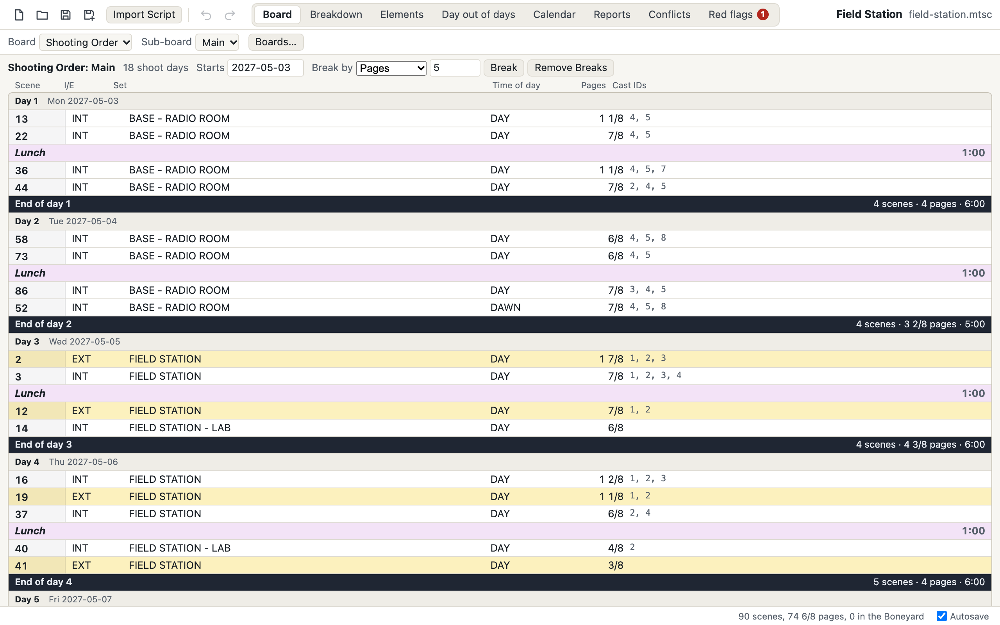
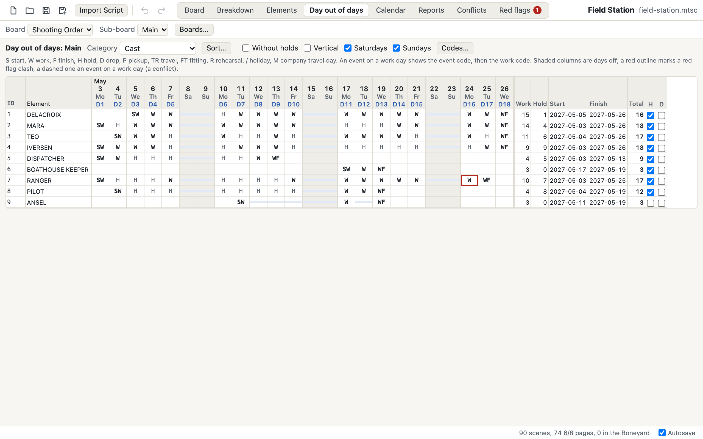
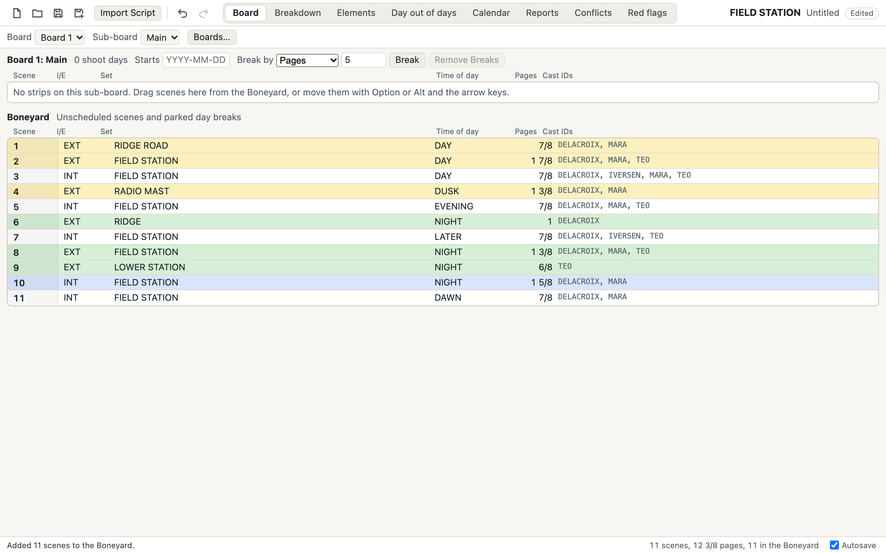
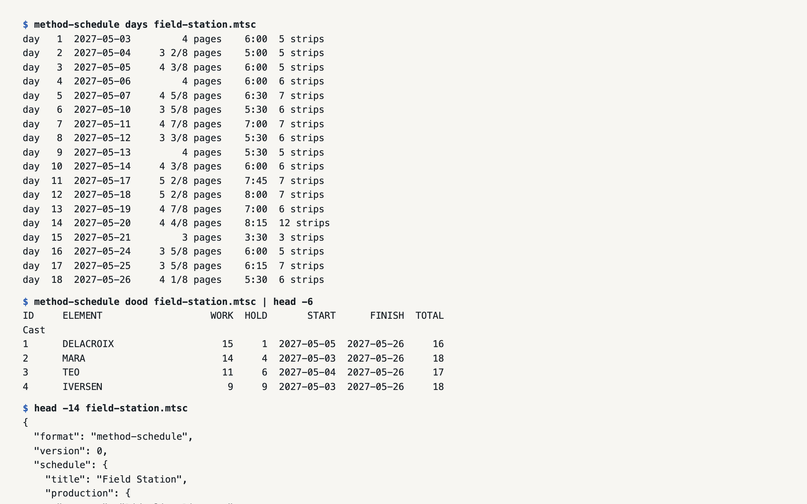

Early alpha Not released yet: it builds from source today. Found a bug? Tell us.
Film and TV scheduling, from script to stripboard.
A free, open-source desktop app for shooting schedules: script breakdown, the stripboard with its day breaks and banners, the calendar, the day out of days and every report a production runs on. Your schedules are open files on your own computer, the board is built for the keyboard, and every day count can tell you exactly where it came from.
No subscription, and your schedule is a file you own. The Mac app comes first, for Apple silicon; Windows and Linux: help us get there.


A look around






No release yet
The first release is on its way. Until then Method Schedule builds from source, and every feature listed here is in the code today.
Yours to keep
Your schedule is a file you own
A schedule is the record of every call a production made. It should outlive any app, any subscription and any company, including this one.
- Free, for good. Open source under MIT or Apache-2.0, with no account and no subscription, so it can't be taken away from you.
- Plain, documented JSON. Schedules are
.mtscfiles with a published specification. Any tool can read them, today or in twenty years. - Exact numbers. Page lengths are whole eighths and times whole minutes, so the same schedule always produces the same bytes.
- Made for version control. Every sheet, strip and element keeps its id through edits and moves, so files diff line by line and a git merge driver combines two people's edits.
- On your disk, not ours. Save a schedule wherever you keep your work. Nothing is uploaded, and the app goes online only to check for updates, which you can turn off. It works offline.
- Nothing invents your schedule. There is no generative AI in the app: every count comes from rules you can read and ask about.
// one breakdown sheet, as written in the file
{
"id": 31,
"scenes": "31",
"int_ext": "INT",
"set": "LIGHTHOUSE STAIRS",
"time_of_day": "NIGHT",
"eighths": 9,
"shoot_minutes": 75,
"synopsis": "Mara climbs to the lamp room.",
"elements": [6, 14, 15]
}Lengths are eighths of a page (9 is 1 1/8), and fields left at their default are left out, so a change to one scene is a change to a few lines of the file.
Explain this count
Every count explains itself
Ask why an element's day out of days reads the way it does, and get
the answer date by date: the scenes it works, the rehearsal counted as worked, the
gaps that were held and why there was no drop. Cmd+I on any row in the app, or
method-schedule explain on the command line.
$ method-schedule explain saltmarsh-road.mtsc "THEO MARSH"
"THEO MARSH" (Cast) on "Main" (board "Shooting Order"): work 7 + hold 1 = total 8, start 2027-04-08, finish 2027-04-19.
Work 7: 5 shoot days worked, 1 event day counted as worked, 1 holiday counted as worked.
No drop: no gap is 7 days or longer, so every gap is held.
Day by day
SW Thu 2027-04-08, shoot day 4: works (scene 3, scene 4); the first work day (S)
RH Fri 2027-04-09, shoot day 5: rehearsal "Diner rehearsal" on 2027-04-09 (THEO MARSH, JONAH VALE), orange counts as worked; the day would be held, so it shows with H but counts as worked, not held
W Mon 2027-04-12, shoot day 6: works (scene 17, scene 18)
H Thu 2027-04-15, shoot day 9: held, a shoot day between work days with holds on
/ Fri 2027-04-16: a holiday inside the work span, holds on and outside any drop, so it counts as worked
WF Mon 2027-04-19, shoot day 10: works (scene 36); the last work day (F)Shortened (the gaps and some days are left out). From the invented sample
production that method-schedule sample --demo writes.
Works with what you have
Bring your schedules with you
A schedule starts from the script. Method Schedule reads the script files writers already have, keeps up with their revisions, and sends everything back out in open formats anyone can read.
Scripts in
One breakdown sheet per scene, with its heading split up, its length in eighths and its speaking characters as cast.
- Fountain Plain-text screenplays
- Final Draft Script files (.fdx), production tags included
- Revisions A new draft merged in, tags and places kept
Out, in open formats
Nothing you make here is locked in.
- .mtsc Plain, documented JSON with a published spec
- PDF Every report and the board, ready to send
- Excel Workbooks whose totals are working formulas
- CSV The same reports for any other tool
- JSON, CSV Call sheet data for each shoot day
To the budget
The day out of days as one small, documented file.
- Exchange file Shoot days, and each element's work, hold and travel days kept apart
- Prep and wrap Each sub-board's dates, when you record them
Method Schedule reads scripts in the open Fountain format and the
.fdx files screenwriting apps save. Final Draft is a trademark of its
owner; Method Schedule is independent and not affiliated with or endorsed by it.
Features
Everything a shooting schedule needs
All of this is built and in the code today. Open a group to see what is in it; the dashed box at the end is what comes next.
Breakdown 9
- Script import Bring in a Fountain or
.fdxscript: one sheet per scene, its heading split into I/E, set and time of day, its length in eighths and its speaking characters as cast. - Breakdown sheets Scenes, I/E, set, time of day, pages, shoot time, synopsis, location and the rest of the header, with the values other sheets use offered as you type.
- Elements by category Tag cast, props, vehicles and the rest by typing under a category or in one quick-add field, and cut, copy and paste them between sheets.
- Element manager Board IDs, notes, custom properties, images and linked elements, with merge, move and renumber, and each element's scenes, pages, work days and dates.
- Category settings Automatic board IDs, default holds and drops, daily quantities, and leaving a category or a single element off the board.
- Quantities per scene Count background, stand-ins or animals scene by scene and see each day's total.
- Split and merge sheets Duplicate a sheet to split a scene, or merge several sheets into one.
- Breakdown designer Choose the order, visibility and width of the header fields, kept in the schedule.
- Images on scenes and elements Attach pictures to sheets and elements and see them beside the board; the files stay where you keep them.
Board 8
- Stripboard by drag or keys Drag strips, or move them with the keyboard, within a sub-board, between sub-boards and into the Boneyard, and cut, copy and paste them.
- Boards and sub-boards Several boards for different orders, each with sub-boards for units or blocks and a Boneyard of unscheduled strips.
- Day breaks Insert them by hand or break the days by pages, shoot time or screen time; each shows its day, date, pages and time.
- Banners Lines across the board for moves, meals and notes, with a duration that counts in the day and a color, size and alignment of their own.
- Strip designer Strip and text colors by I/E and time of day, up to four lines a strip with merged cells, and a layout library shared with the one-line report.
- Sort and find Sort strips by up to three fields, and find strips with a highlight you step through.
- Split screen Put the breakdown, another board, the calendar or the scene's images beside the board, or the images beside the breakdown, and back to one view in a click.
- Print the board Print all or selected strips, with or without the Boneyard, or save the board as a PDF.
Day out of days 5
- The full grid Every element's start, work, hold, drop and finish, day by day, for each sub-board and category, with a summary.
- Counting rules that hold up Holds between work days, one drop over the longest gap, travel, fittings and rehearsals as worked days, and holidays and company moves only inside a held span.
- Explain this count Ask why an element's counts are what they are and get the answer date by date.
- Your codes, sorts and views Your own code letters, multi-key sorts, a vertical view, a view without holds, and hold and drop switches on every row.
- Header fields as categories Read-only rows for each set, location, unit, episode, I/E, time of day, script day and sequence value with their sheets, pages, work days, start and finish.
Calendar and events 6
- A calendar per sub-board Start date, working week, off days, holidays and company travel days, with shoot days moving around them on their own.
- Month and weeks views One month or every week of the schedule in one list, with strips, banners, pages and length on each day, switches for what each day shows, an actions menu on any date, and a filter by category and element.
- Events Travel, fittings, rehearsals, unavailable days, camera tests and post-production work over a date range, in one of ten colors, made from an element or a sheet and dragged on the calendar.
- Conflicts An element booked on one date in two sub-boards, or an event on a work day, is marked on the strips, the calendar, the day out of days and the elements table.
- Red flags Flag several elements on several dates at once, with standard types that match the event kinds, see every flag in one table and every place the schedule clashes with them.
- Prep and wrap dates Record each sub-board's prep start and wrap end for the budget.
Reports and exports 5
- The reports a production runs on One-line, shooting schedule, day out of days and its summary, element list, breakdown and calendar.
- More reports Breakdown by day, element detail, daily category totals, the vertical one-line with its cast grid, conflicts, red flags and a multi-unit one-line merged by date.
- Report designer Columns on up to four lines with merged cells, header layouts with your production info, date ranges and named copies, all kept in the schedule.
- PDF Print any report or save it as a PDF.
- Excel and CSV One-line, day out of days, elements, breakdown, element detail and the whole board as workbooks whose totals are working formulas, or as CSV.
Files and safety 6
- Open file format Schedules are
.mtscfiles: plain, documented JSON that diffs cleanly and that any tool can read. - Never lose work Autosave into the file, a recovery copy for a schedule not saved yet, rolling backups and a restore after a crash.
- Undo Every change is one step, up to 200 of them.
- Templates and layout files Start a schedule from a template of your categories, elements, boards and layouts, and share layouts as files.
- Several windows One schedule per window, each with its own undo, autosave and recovery, and a list of recent files.
- What changed and merge See every change between two schedules in plain words, and merge two copies that changed apart, with real clashes listed for you to pick.
Keyboard and command line 5
- Keyboard first Move strips, insert day breaks and banners, step through sheets and switch tabs from the keyboard; a shortcut sheet lists every key.
- Find and replace Search the text fields, replace in the results, or build a search from field, comparison and value rows.
- Scriptable command line
method-scheduleimports scripts, sets day breaks and writes the reports as text, CSV or Excel, with no window and no network. - Coding agents An MCP server lets coding agents read and edit schedules through the same engine, only in the folders you allow.
- Git merge driver Keep schedules in git and let
method-schedule merge-drivercombine two people's edits, flagging only real conflicts.
Beyond the usual stripboard 10
- Budget exchange file Shoot days and every element's day counts as one small, documented file, written for Method Budget and open to any budgeting app.
- Production tags from the script Bring in the props, wardrobe and other tags a tagged script already carries as elements.
- Script revisions Merge a revised draft into the schedule: scenes keep their tags and places, new ones go to the Boneyard and cut ones are marked omitted.
- Day timeline Each shoot day from its call time, strip by strip, with warnings for a long day or a scene past sunset, and what runs past wrap moved to the next day in one step.
- Sunrise and sunset Give each location its coordinates and see sunrise and sunset for every dated shoot day, with the US and Canada or EU daylight saving dates.
- Rest checks Set a turnaround per category and get a warning wherever a rest between wrap and the next call is too short.
- Schedule locks and drift Lock the schedule as sent, then see each actor's work days added, dropped and moved since.
- Strip order suggestion A suggested order that groups by location, set and cast around your pinned strips and red flags, with the before and after counts to compare.
- Call sheet data A shoot day's call sheet data as JSON or CSV, ready for whatever lays out your call sheets.
- A printed call sheet A shoot day's call sheet printed or saved as a PDF: call and wrap, sunrise and sunset, the scenes with their times, the cast on set, other elements and notes.
On the roadmap
- Signed Mac app with updates A downloadable Mac app, signed and notarized by Apple, that keeps itself up to date.
- Windows and Linux, tested Both build from the same code today; printing, keys and file types still need a hands-on check.
- Day counts into Method Budget Linking a schedule from inside Method Budget, so shoot days and cast days arrive as the budget's globals; its reader for the exchange file is already built.
- Try it in your browser The app with an invented schedule, running in the browser with nothing to install.
- Daylight saving per location Sunrise, sunset and call times that follow each location's clock changes.
Keyboard first
Hands stay on the keys
Scheduling is moving strips. Step through the board, carry a run of strips across day breaks, drop in a day break or a banner and open a scene's sheet without reaching for the mouse.
Every command is in the menus, most have a key, and a shortcut sheet lists them all with a filter.
Shown with Mac keys. On Windows and Linux, Ctrl takes the place of Command and Alt the place of Option.
| Up arrowDown arrow | Select the strip above or below (with Shift, grow the selection) |
|---|---|
| OptionUp arrow | Move the selected strips up, across day breaks and between sub-boards (with Down arrow, down) |
| B | Insert a day break below the selected strip |
| CommandB | Insert a banner above the selection |
| Return | Open the selected scene's breakdown sheet |
| Command] | Next sheet in board order (with [, the previous one) |
| CommandI | Explain the selected day out of days row's counts |
| CommandShiftF | Find and replace |
| Command/ | Every shortcut, on one sheet |
Command line and coding agents
The same engine, without the window
The method-schedule command reads and writes schedules with
no window and no network, so schedules fit into scripts, build steps and automated
checks.
$ method-schedule import salt-road.fountain --into salt-road.mtsc # a sheet per scene
$ method-schedule breaks salt-road.mtsc --pages 5 # break the days
$ method-schedule days salt-road.mtsc # shoot days and dates
$ method-schedule dood salt-road.mtsc --grid # the day out of days
$ method-schedule explain salt-road.mtsc MARA # why those counts
$ method-schedule oneline salt-road.mtsc --xlsx one-line.xlsx # a workbook
$ method-schedule diff old.mtsc new.mtsc # what changedCommand line
Import scripts, set start dates and day breaks, list shoot days, write every report as text, CSV or Excel, compare and merge schedules, and run a git merge driver that combines edits on its own. Get started
Coding agents
An MCP server lets Claude Code and other agents import a script, fill in breakdown sheets, move strips, set day breaks and read the day out of days through the same engine. It only touches the folders you allow and nothing is sent anywhere. How to connect
Schedule to budget
The day out of days feeds the budget
Method Schedule has a sister app, Method Budget, built the same way: free, open source, open files on your own computer. The schedule hands the budget its day counts through one open file.
-
Schedule
Break down the script and lay out the board. The day out of days counts every element's work, hold, travel and drop days.
-
Exchange file
Export for Budget, or
method-schedule budget, writes the shoot days and each element's counts, kept apart and never pre-added, to one small JSON file with a published spec. -
Budget
Method Budget's reader for the file is built; linking a schedule from inside its app, so the counts become its shoot day and cast globals, is coming. Any other budgeting tool can read the file too.
Download
Get Method Schedule
There is no release yet. Until the first one, build it from source in a few minutes with nothing but Rust.
Mac app
A Mac app for Apple silicon, signed and notarized by Apple so it opens like any other app, comes with the first release. Windows and Linux installers are built too, and wait on a hands-on test.
Status, honestly
| Computer | Built | Signed | Tested |
|---|---|---|---|
| Mac, Apple silicon | Yes, an app (.dmg) | Signed and notarized by Apple, from the first release | By a person throughout development, and by the automated tests weekly |
| Mac, Intel | No: the Mac app is for Apple silicon only | ||
| Windows, 64-bit | Yes, an installer (.exe) | Not yet: Windows will warn that the publisher is unknown | Automated tests weekly; never installed by a person yet |
| Linux, 64-bit | Yes, .deb and AppImage | Not signed | Automated tests on every change; never installed by a person yet |
Not there yet: a published release (the first is being prepared), updates inside the app on Windows and Linux, a hands-on check of printing, keys and file types on Windows and Linux, and linking a schedule from inside Method Budget. Windows and Linux: help us get there.
Method Schedule is new and not released. Its counting rules are checked case by case, but you will find rough edges, and a count is worth a second look before a schedule goes out. Keep a copy of schedules that matter, and when something looks wrong, tell us: bugs get fixed fast at this stage.
Help build it
Help put a real scheduling tool in everyone's hands
Every report makes the next version better, and you don't need to write code to make one. Found a bug? Open an issue (Help > Report a Bug fills one in for you). Have a question? Ask in Discussions.
If you make films
Check the day out of days against your experience and tell us where a count differs from what you would expect; the app's explanation of that count helps us find out why. Tell us about the board and report layouts your productions use, and send invented sample schedules.
If you write code
Start with an issue labelled good first issue. One command checks everything:
cargo test --workspacePlease never attach or quote a real schedule or script: an invented one
that shows the problem is always enough, and method-schedule sample makes one.
FAQ
Questions
Is Method Schedule affiliated with other scheduling software?
No. Method Schedule is an independent, clean-room project, not affiliated with Entertainment Partners or Movie Magic Scheduling.
Can it open schedules from other apps?
Not their schedule files. A schedule starts from the script: a Fountain or
.fdx file comes in as one breakdown sheet per scene, and later drafts
merge into the schedule you already have. See
Bring your schedules with you.
Where does my data live?
On your own computer, in files you save wherever you like. There is no account and no cloud. The app goes online only to check for a newer version of itself (Help > Check for Updates Automatically turns that off); your schedules never leave your computer.
What does it cost?
Nothing. Method Schedule is free and open source, dual-licensed under MIT or Apache-2.0, so it can't be taken away from you.
Which computers does it run on?
The Mac comes first, for Apple silicon: the app is built and run there. Windows and Linux installers are built from the same code and are waiting on a hands-on test. See Status, honestly.
Does it work with Method Budget?
They share the open exchange file: Method Schedule writes the shoot days and day counts today, Method Budget's reader for the file is built, and linking a schedule from inside Method Budget is coming. See The day out of days feeds the budget.
Can I script it or keep schedules in git?
Yes. The method-schedule command line imports scripts, breaks days,
writes reports and compares schedules, and its git merge driver combines two
people's edits to the same schedule.
How can I help?
Check its counts against your experience, report what breaks, tell us about the layouts your productions use, and send patches. Please never attach a real schedule to an issue: an invented one that shows the problem is always enough. See Help build it.
How do I get help?
Found a bug? Open an issue (Help > Report a Bug fills one in for you). Have a question? Ask in Discussions. For anything private, write to hello@methodproduction.com.